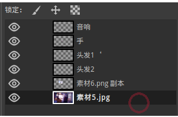

GIMP介绍
GIMP是GNU图像处理软件的缩写,是完全开源、 免费、自由的软件（想了解一下自由软件和GNU可以点这里)， 因为GIMP完全免费，我们这些没事p点图玩玩的用户使用GIMP就完全够用了，如果使用photoshop正版的话要支付一笔昂贵的授权费用（3000+RMB） ，使用盗版又需要折腾很长时间，费时费力。GIMP的功能和photoshop高度相似，许多工具只是换了个名字而已（比如仿制图章=克隆工具） ，因此个人用户使用GIMP可以完全可以替代photoshop。
GIMP下载和安装
Windows用户
去GIMP的官网https://www.gimp.org/下载安装即可，安装时推荐勾选所有组件。macos用户
同Windows，去GIMP的官网下载即可Linux用户
deb系
Arch系
RPM系
GIMP界面介绍
1菜单栏
这个不用多说2工具栏
用来选择工具3工具选项栏
用来更改你现在选用的工具的属性4图像处理区
用来处理你现在打开的图像，按住ctrl+鼠标滚轮，可以调整图像的大小，按住鼠标中键可以拖动图像，这些操作在你进行细致操作的时候很有用。5附加标签栏
可以显示多个辅助标签，例如笔刷风格，字体，历史记录等等6图层栏
用来显示当前图像的图层，点击眼睛可以显示/隐藏图层，右键图层可以对其进行一些操作，左键以选择图层，选择图层会自动将选区选中这个图层。图层的概念（photoshop也适用）
图层是图像处理软件的一个抽象概念，用来辅助图像处理，大多数的高级图像处理工具都具有图层功能。比喻一下，图层就像是涂了颜料的玻璃板，这些玻璃板叠放在一起，叠放在上层的玻璃板会遮住下面的玻璃板。很通俗易懂吧。
GIMP工具介绍-选区类
矩形选区工具
按矩形来选择选区，拖动选区的四个角可以调整选区的大小，如果对选区不满意，可以按ctrl+shift+a取消掉选区。
椭圆选区工具
会画出圆形的选区，其他操作和矩形选区工具一样。
自由选区工具
可以用鼠标来自由绘制选区，也可以绘制多边形的选区，如下图(注意，选区一定要闭合才能成为选区。)

模糊选择工具
点一下即可选中附近颜色相同的区域，在处理颜色分明的图像很有用，但在颜色复杂的图像表现就不尽人意了，如下图。

按颜色选择工具
这个工具和模糊选择工具很像，不同的是，按颜色选择工具会直接选中图像上所有颜色相近的区域，不管是不是连续的，一律选中。而模糊选择工具是按照连续的颜色相同区域选择，不会直接选择整个图像的颜色相近区域。
选区的几种模式
选区有4种选择模式（覆盖、合并、减去、相交）,其他的选区工具也适用，下面以矩形选区工具来举例。
覆盖模式
选区工具默认就是覆盖模式，覆盖模式下再选其他的选区会覆盖之前的选区。如下图

合并模式
按住shift即可进入合并模式，松开回到默认的覆盖模式，合并模式会把之后画出的选区合并到之前的选区，如下图。
减去模式
按住ctrl即可进入减去模式，减去模式把你之前画出的选区删去，如下图。

相交模式
按住shift+ctrl会进入相交模式，相交模式会记录多个选区相交的区域，如下图。

一个简单的图像处理
在你学会了选区之后，我们就可以正式开始了，下面我将用一个简单的p图流程来介绍一下技巧。
我们以这两张图为例子
下面我们要做的就是把蔡徐坤打篮球P到素材1的电脑屏幕上
打开素材图片
首先在GIMP的菜单栏选中文件-打开图片，选择2张素材打开，这样2张素材图片就会显示在图像处理区了。
处理要p的素材
我们先从蔡徐坤打篮球（素材2）入手。 第二张素材是1080P大小，对于素材1来说有些太大了，要先改变一下素材2的大小。 在标签页选中素材2,然后选择菜单栏的图像--缩放图像将高度改为480。注意，图像大小选择框要选择像素，之后选择缩放即可。
将素材2移动到素材1上面
首先我们在标签页选中素材2,之后按ctrl+X(剪切)，之后在标签页选中素材1,再按ctrl+V即可把素材2转移到素材1上面了。效果如下图。
将浮动选区新建为图层
虽然已经将素材2移动到素材1上面了，但这样还不够，看右下角的图层区。素材2是显示为“浮动选区”，浮动选区是无法被编辑的，我们要先把浮动选区建立为图层才行.在图层区右键浮动选区，点击“到新图层”，这样就可以编辑这个图层了。
编辑素材1
将会对你造成阻碍的东西都"拿掉",比如素材2,还有音响，头发和手。 先把素材按隐藏（点击图层区里的眼睛图标）之后再用选区工具将造成阻碍的东西选中，然后用ctrl+X，ctrl+V来建立为新图层，再点击眼睛图标将这些新建的图层隐藏，这样这些都我们造成干扰的东西就被“拿掉”了。效果如下图。
将素材2P到显示器上
首先让素材2显示（点击图层区的眼睛图标），之后在工具栏找到统一变换工具，在图层区域选中素材2。之后就可以用统一变换工具对其进行编辑了。
统一变换工具的8个角可以用来缩放图像，点击边角的4个角中的菱形图案可以进行变形操作，具体如下图。

调整图层顺序
接下来我们调整一下图层顺序使素材2显示在，音箱和头发的下面。在图层区域拖动素材2到背景的上方，音箱，头发图层的下方即可，效果如下。 
后处理
p完图之后，难免会出现一些瑕疵，现在处理的图片有一些“白边”，我们将用克隆工具来将其消除
向下合并
克隆工具只能克隆同一图层的图像，因此我们要将所有图层合并成一个图像，在图层区右键最上层的图层，点击向下合并，这样图层就会跟下面的图层合并了，一直合并到只有一个图层为止。
使用克隆工具来修补缺失的部分
克隆工具可以将图像的某一部分克隆到图像的另一个地方，通常用来修补缺失的区域。 首先在工具栏找到克隆工具，然后用ctrl+左键选中要克隆的图像作为源，然后左键并拖动需要修补的区域，就可以把源上的图像克隆到你要修补的区域了，效果如下图。